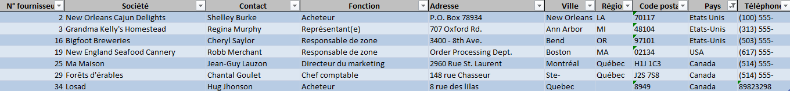

Mission 1
KDou, une entreprise commerciale vendant à ses clients, tous français, des denrées alimentaires venues du monde entier, a fait appel à notre équipe afin de l'aider à prendre en charge l'évolution de son organisation et de son positionnement. Le but de KDou est de mieux se positionner par rapport à ses concurrents et d'explorer le marché des produits éco responsables pouvant être vendus plus chère.
Dans le cadre de notre première mission, il nous a été fourni un classeur Excel pour nous permettre de nous familiariser avec l'organisation de la base de données de KDou dont voici l'organisation :
| Table | Clé primaire | Clé secondaire |
|---|---|---|
| Fournisseur | N°Fournisseur | |
| Produit | Réf Produit | N° Fournisseur, Code Catégorie |
| Catégorie | Code Catégorie | |
| Clientèle | Code Client | |
| Commande | N° Commande | Code Client |
| DetailCommande | Réf Produit + N° Commande | Réf Produit, N° Commande |
Le premier indicateur que nous avons isolé est le prix moyen des produits proposés par KDou. Cet indicateur permet en partie de déterminer la clientèle cible de KDou. Un prix moyen élevé indiquerais que la clientèle cible de KDou est plutôt
Une autre chose révélée par cette exemple est l'état déplorable de la base de donnée de KDou. Rien que dans l'extrait montré ci-dessus on peut déjà remarquer 3 erreurs, dont la plus courrante sur toute la base de donnée, des localisation dont le nom est écrit de plusieurs façon. Dans cet exemple, Les Etats-Unis sont identifiés en tant que "Etats-Unis", "Etat Unis" et "USA". Ce genre d'erreur rend l'obtention de données simples comme le nombre de founisseurs nord Americain difficile, et toute la base de donnée de KDou en est criblée.